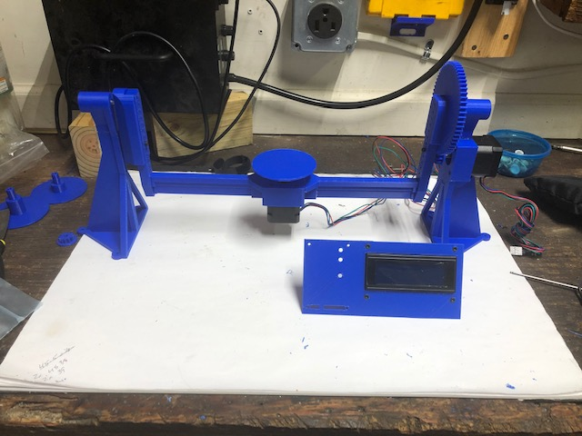

Scanner Asesmbly
With all of the 3D printed parts in hand, mechanical assembly went fairly smoothly. Due to the previously mentioned bulging corners, several corners had to be sanded. After sanding and removing the melted plastic, the parts fit together fairly well. Super glue was applied to make the full height stands and to hold together rotating carriage. Many of the bolt holes had to be opened up with a drill but I was expecting that due to the 3D printing tolerances.
The biggest hassle was having to reprint the center rotating body. The holes did not line up with the NEMA 17 stepper motor, even after opening them up with a drill. Reprinting at a slower speed helped the fit issue but did not solve it. Several of the screw holes still had to be opened up with a drill.
A bit of light oil was applied to the bearing surfaces. It seemed to make a small difference in friction felt when the parts were moved by hand.

I tried to caputre a time lapse mechanical assembly but it did not go smoothly due to the aforementioned printing issues. I had to turn off the time lapse during the printing. Then I didn’t think to turn it back on while assembly was completed. I will attribute that to being inexperienced in the world of creation on online content. Since this is not for a youtube channel, I have opted not to go back and redo the time lapse.